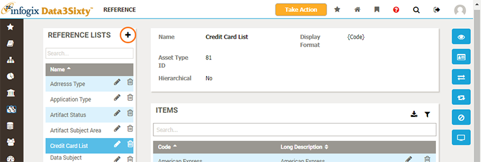
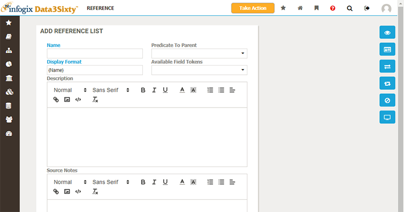
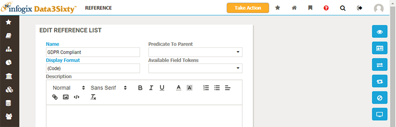
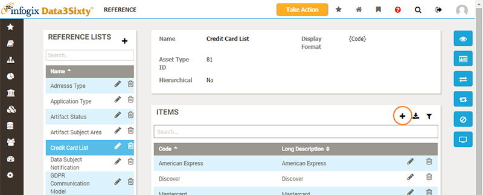
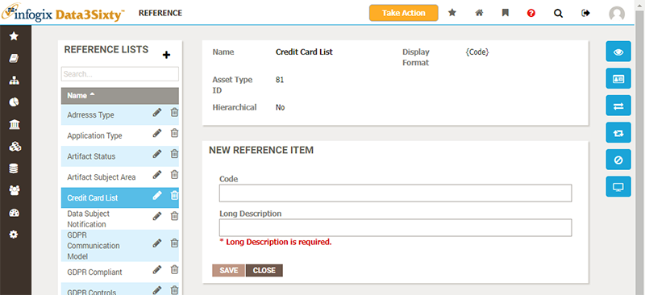
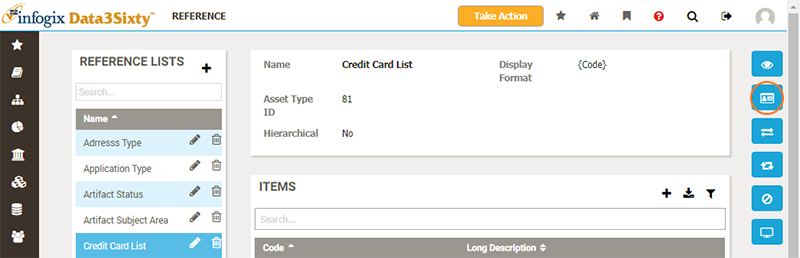
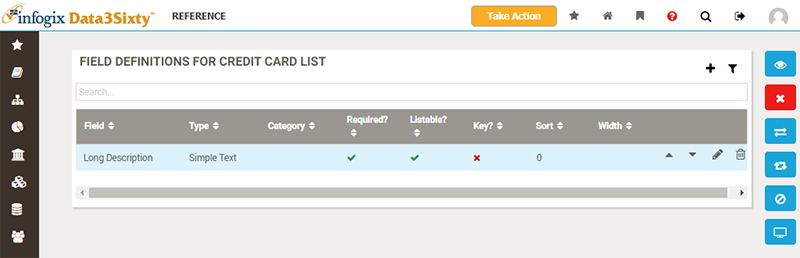
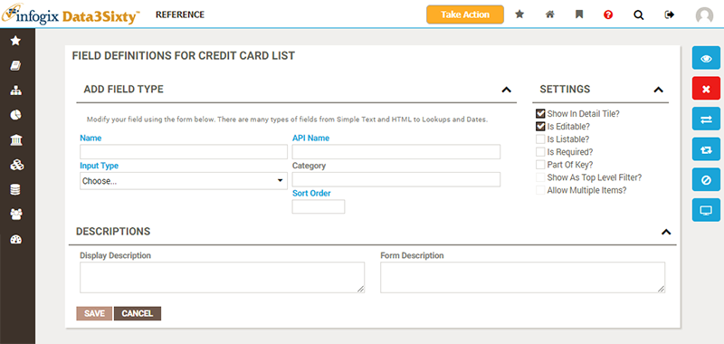

|
|
Creating and editing reference lists
Creating reference lists
To create a new reference list, navigate to the Reference page and click the Add button in the top-right of the page:

The Add Reference List panel appears, prompting you to enter the name and description for the new list:

Once saved, you will be returned to the previous screen, with the newly created list selected. You can now move on to add items to the list, as explained in the section Adding items to reference lists below.
Editing reference lists
To edit the details of a reference list, click the Edit button against the item you wish to amend. The Edit Reference List panel will appear, allowing you to change the name or description of the list:

Adding items to reference lists
To add a new item to the selected reference list, click the Add button above the list of items:

You are prompted to specify field values for a new item:

Click Save to create the item and add it to the list.
You can also use the Edit and Delete buttons to modify and remove items from the list.
Field definitions
When you add new items to the reference list, you are prompted to specify values for any fields defined for the items. You can specify which fields should be populated by choosing the Field Definition view for the reference list:

The Field Definition view displays a list of fields for the reference list items:

You can add, edit, delete and reorder fields from this view. The Add Field panel allows you to provide the details for a new field:
